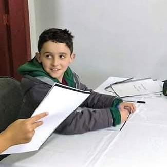

QUAL É O SENTIDO DA VIDA?
Bruno Yuuki Hayashi
A filosofia moderna de Louis August Of Stones Grunhido

O filósofo contemporâneo diz que o sentido da vida é: comer ou ser comido mas não abandonando o seu modos operante que é curtir a vida, como um bom ser humano nasceu para fazer.
"Se você não é um ser humano, sinto muito"